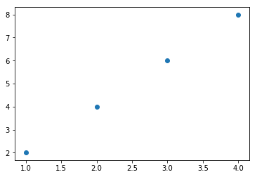
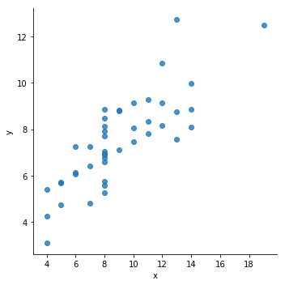
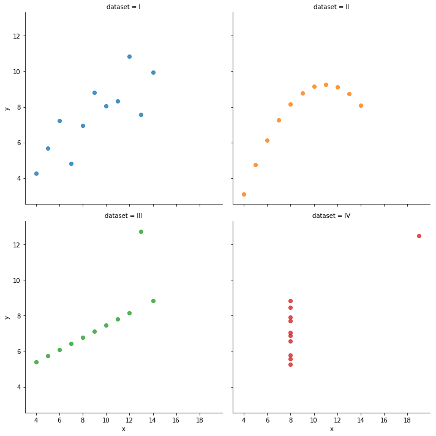
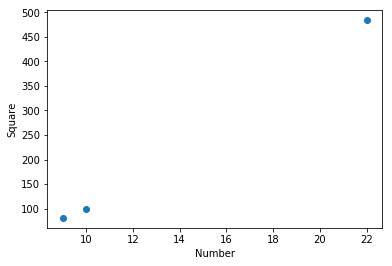
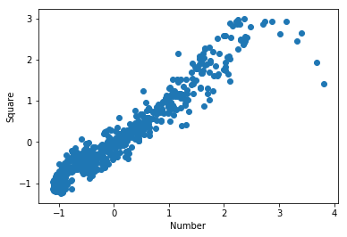

データを統計量で記述する¶
平均を求める¶
In [20]:
import unittest
'''
平均を計算
'''
def calculate_mean(numbers):
s = sum(numbers)
N = len(numbers)
mean = s / N
return mean
class TestCalculateMean(unittest.TestCase):
def test_01(self):
donations = [100, 60, 70, 900, 100, 200, 500, 500, 503, 600, 1000, 1200]
mean = calculate_mean(donations)
N = len(donations)
self.assertEqual(mean, 477.75)
self.assertEqual(N, 12)
if __name__ == '__main__':
unittest.main(argv=['first-arg-is-ignored'], exit=False)
....
----------------------------------------------------------------------
Ran 4 tests in 0.003s
OK
中央値を求める¶
In [21]:
import unittest
'''
中央値を計算
'''
def calculate_median(numbers):
N = len(numbers)
numbers.sort()
if N % 2 == 0:
m1 = N / 2
m2 = (N / 2) + 1
m1 = int(m1) - 1
m2 = int(m2) - 1
median = (numbers[m1] + numbers[m2]) / 2
else:
m = (N + 1) / 2
m = int(m) - 1
median = numbers[m]
return median
class TestListCalculateMedian(unittest.TestCase):
def test_01(self):
donations = [100, 60, 70, 900, 100, 200, 500, 500, 503, 600, 1000, 1200]
median = calculate_median(donations)
N = len(donations)
self.assertEqual(median, 500)
def test_02(self):
donations = [60, 70, 100, 900]
median = calculate_median(donations)
N = len(donations)
self.assertEqual(median, 85)
def test_03(self):
donations = [60, 70, 100]
median = calculate_median(donations)
N = len(donations)
self.assertEqual(median, 70)
if __name__ == '__main__':
unittest.main(argv=['first-arg-is-ignored'], exit=False)
.......
----------------------------------------------------------------------
Ran 7 tests in 0.006s
OK
最頻値を求め度数分布表を作る¶
一番多い要素を見つける¶
In [22]:
from collections import Counter
simplelist = [4, 2, 1, 3, 4]
c = Counter(simplelist)
print(c.most_common())
print(c.most_common(1))
print(c.most_common(2))
mode = c.most_common(1)
print(mode)
print(mode[0][0])
[(4, 2), (2, 1), (1, 1), (3, 1)]
[(4, 2)]
[(4, 2), (2, 1)]
[(4, 2)]
4
最頻値を探す¶
In [23]:
import unittest
'''
最頻値を計算
'''
def calculate_mode(numbers):
c = Counter(numbers)
mode = c.most_common(1)
return mode[0][0]
class TestListCalculateMode(unittest.TestCase):
def test_01(self):
scores = [7, 8, 9, 2, 10, 9, 9, 9, 9, 4, 5, 6, 15, 6, 7, 8, 6, 1, 10]
mode = calculate_mode(scores)
self.assertEqual(mode, 9)
if __name__ == '__main__':
unittest.main(argv=['first-arg-is-ignored'], exit=False)
........
----------------------------------------------------------------------
Ran 8 tests in 0.008s
OK
In [24]:
import unittest
'''
数のリストに複数の最頻値があるときに最頻値を計算
'''
def calculate_modes(numbers):
c = Counter(numbers)
numbers_freq = c.most_common()
max_count = numbers_freq[0][1]
modes = []
for num in numbers_freq:
if num[1] == max_count:
modes.append(num[0])
return modes
class TestListCalculateModes(unittest.TestCase):
def test_01(self):
scores = [5, 5, 5, 4, 4, 4, 9, 1, 3]
modes = calculate_modes(scores)
self.assertEqual(modes, [5, 4])
if __name__ == '__main__':
unittest.main(argv=['first-arg-is-ignored'], exit=False)
.........
----------------------------------------------------------------------
Ran 9 tests in 0.005s
OK
度数分布を作る¶
| 点数 | 頻度 |
|---|---|
| 1 | 2 |
| 2 | 1 |
| 4 | 1 |
| 5 | 2 |
| 6 | 3 |
| 7 | 2 |
| 8 | 2 |
| 9 | 5 |
| 10 | 2 |
In [25]:
"""
数のリストの度数分布表
"""
def frequency_table(numbers):
table = Counter(numbers)
print('Number\tFrequency')
for number in table.most_common():
print('{0}\t{1}'.format(number[0], number[1]))
if __name__ == '__main__':
scores = [7, 8, 9, 2, 10, 9, 9, 9, 9, 4, 5, 6, 1, 5, 6, 7, 8, 6, 1, 10]
frequency_table(scores)
Number Frequency
9 5
6 3
7 2
8 2
10 2
5 2
1 2
2 1
4 1
In [26]:
"""
数のリストの度数分布表
数の順に表示するよう修正
"""
def frequency_sorted_table(numbers):
table = Counter(numbers)
numbers_freq = table.most_common()
numbers_freq.sort()
print('Number\tFrequency')
for number in numbers_freq:
print('{0}\t{1}'.format(number[0], number[1]))
if __name__ == '__main__':
scores = [7, 8, 9, 2, 10, 9, 9, 9, 9, 4, 5, 6, 1, 5, 6, 7, 8, 6, 1, 10]
frequency_sorted_table(scores)
Number Frequency
1 2
2 1
4 1
5 2
6 3
7 2
8 2
9 5
10 2
散らばりを測る¶
数集合の範囲を求める¶
In [27]:
import unittest
'''
範囲を決める
'''
def find_range(numbers):
lowest = min(numbers)
highest = max(numbers)
f = highest - lowest
return lowest, highest, f
class TestFindRange(unittest.TestCase):
def test_01(self):
donations = [100, 60, 70, 900, 100, 200, 500, 500, 503, 600, 1000, 1200]
lowest, highest, r = find_range(donations)
self.assertEqual(lowest, 60)
self.assertEqual(highest, 1200)
self.assertEqual(r, 1140)
if __name__ == '__main__':
unittest.main(argv=['first-arg-is-ignored'], exit=False)
..........
----------------------------------------------------------------------
Ran 10 tests in 0.007s
OK
分散と標準偏差を求める¶
\(\frac{\sum(x_i - x_{avg})^2}{n}\)
In [28]:
import unittest
'''
数のリストの分散と標準偏差を求める
'''
def calculate_variance(numbers):
s = sum(numbers)
N = len(numbers)
mean = s / N
diff = []
for num in numbers:
diff.append(num - mean)
squared_diff = []
for d in diff:
squared_diff.append(d ** 2)
sum_squared_diff = sum(squared_diff)
variance = sum_squared_diff / len(numbers)
return variance
class TestCalculateVariance(unittest.TestCase):
def test_01(self):
donations = [100, 60, 70, 900, 100, 200, 500, 500, 503, 600, 1000, 1200]
variance = calculate_variance(donations)
self.assertEqual(variance, 141047.35416666666)
std = variance ** 0.5
self.assertEqual(std, 375.5627166887931)
if __name__ == '__main__':
unittest.main(argv=['first-arg-is-ignored'], exit=False)
..........
----------------------------------------------------------------------
Ran 10 tests in 0.007s
OK
２つのデータセットの相関を計算する¶
相関係数を計算する¶
\(\frac{n\sum xy - \sum x\sum y}{\sqrt{n \sum x^2 -(\sum x)^2(n\sum y^2 - (\sum y)^2)}}\)
\(\sum xy\) 2つの数集合:math:xと\(y\)の個別要素の積和
\(\sum x\) 集合\(x\)の数の和
\(\sum y\) 集合\(y\)の数の和
\((\sum x)^2\) 集合:math:xの数の和の2乗
\((\sum y)^2\) 集合:math:yの数の和の2乗
\(\sum x^2\) 集合\(x\)の数の和の2乗
\(\sum y^2\) 集合\(y\)の数の和の2乗
In [29]:
import unittest
'''
相関係数を計算するプログラム
'''
def find_corr_x_y(x, y):
n = len(x)
# 積の和を求める
prod = []
for xi, yi in zip(x, y):
prod.append(xi * yi)
sum_prod_x_y = sum(prod)
sum_x = sum(x)
sum_y = sum(y)
squared_sum_x = sum_x ** 2
squared_sum_y = sum_y ** 2
x_square = []
for xi in x:
x_square.append(xi ** 2)
# 和を求める
x_square_sum = sum(x_square)
y_square = []
for yi in y:
y_square.append(yi ** 2)
# 和を求める
y_square_sum = sum(y_square)
# 式を使って相関を計算
numerator = n * sum_prod_x_y - sum_x * sum_y
denominatior_term1 = n * x_square_sum - squared_sum_x
denominatior_term2 = n * y_square_sum - squared_sum_y
denominator = (denominatior_term1*denominatior_term2)**0.5
correlation = numerator/denominator
return correlation
class TestFindCorr(unittest.TestCase):
def test_01(self):
x = [1, 2, 3]
y = [1, 2, 3]
corr = find_corr_x_y(x, y)
self.assertEqual(corr, 1)
x = [1, 2, 3]
y = [-1, -2, -3]
corr = find_corr_x_y(x, y)
self.assertEqual(corr, -1)
x = [1, 2, 3]
y = [1, -2, 3]
corr = find_corr_x_y(x, y)
self.assertEqual(corr, 0.39735970711951313)
if __name__ == '__main__':
unittest.main(argv=['first-arg-is-ignored'], exit=False)
..........
----------------------------------------------------------------------
Ran 10 tests in 0.006s
OK
散布図¶
In [30]:
import sys
!{sys.executable} -m pip install seaborn
Requirement already satisfied: seaborn in /Users/k2works/.pyenv/versions/3.7.0/lib/python3.7/site-packages (0.9.0)
Requirement already satisfied: pandas>=0.15.2 in /Users/k2works/.pyenv/versions/3.7.0/lib/python3.7/site-packages (from seaborn) (0.23.4)
Requirement already satisfied: scipy>=0.14.0 in /Users/k2works/.pyenv/versions/3.7.0/lib/python3.7/site-packages (from seaborn) (1.1.0)
Requirement already satisfied: numpy>=1.9.3 in /Users/k2works/.pyenv/versions/3.7.0/lib/python3.7/site-packages (from seaborn) (1.15.1)
Requirement already satisfied: matplotlib>=1.4.3 in /Users/k2works/.pyenv/versions/3.7.0/lib/python3.7/site-packages (from seaborn) (3.0.0)
Requirement already satisfied: pytz>=2011k in /Users/k2works/.local/lib/python3.7/site-packages (from pandas>=0.15.2->seaborn) (2018.5)
Requirement already satisfied: python-dateutil>=2.5.0 in /Users/k2works/.local/lib/python3.7/site-packages (from pandas>=0.15.2->seaborn) (2.7.3)
Requirement already satisfied: cycler>=0.10 in /Users/k2works/.pyenv/versions/3.7.0/lib/python3.7/site-packages (from matplotlib>=1.4.3->seaborn) (0.10.0)
Requirement already satisfied: kiwisolver>=1.0.1 in /Users/k2works/.pyenv/versions/3.7.0/lib/python3.7/site-packages (from matplotlib>=1.4.3->seaborn) (1.0.1)
Requirement already satisfied: pyparsing!=2.0.4,!=2.1.2,!=2.1.6,>=2.0.1 in /Users/k2works/.pyenv/versions/3.7.0/lib/python3.7/site-packages (from matplotlib>=1.4.3->seaborn) (2.2.1)
Requirement already satisfied: six>=1.5 in /Users/k2works/.local/lib/python3.7/site-packages (from python-dateutil>=2.5.0->pandas>=0.15.2->seaborn) (1.11.0)
Requirement already satisfied: setuptools in /Users/k2works/.pyenv/versions/3.7.0/lib/python3.7/site-packages (from kiwisolver>=1.0.1->matplotlib>=1.4.3->seaborn) (39.0.1)
In [31]:
import seaborn as sns
import matplotlib.pyplot as plt
x = [1, 2, 3, 4]
y = [2, 4, 6, 8]
plt.scatter(x, y)
plt.show()

In [32]:
import sys
!{sys.executable} -m pip install numpy pandas
Requirement already satisfied: numpy in /Users/k2works/.pyenv/versions/3.7.0/lib/python3.7/site-packages (1.15.1)
Requirement already satisfied: pandas in /Users/k2works/.pyenv/versions/3.7.0/lib/python3.7/site-packages (0.23.4)
Requirement already satisfied: pytz>=2011k in /Users/k2works/.local/lib/python3.7/site-packages (from pandas) (2018.5)
Requirement already satisfied: python-dateutil>=2.5.0 in /Users/k2works/.local/lib/python3.7/site-packages (from pandas) (2.7.3)
Requirement already satisfied: six>=1.5 in /Users/k2works/.local/lib/python3.7/site-packages (from python-dateutil>=2.5.0->pandas) (1.11.0)
In [33]:
import numpy as np
import pandas as pd
from pandas import Series,DataFrame
import matplotlib.pyplot as plt
import seaborn as sns
anscombe=sns.load_dataset("anscombe", engine="python")
sns.lmplot(x="x",y="y",data=anscombe,fit_reg=False)
plt.show()
sns.lmplot(x="x",y="y",data=anscombe,fit_reg=False,hue="dataset",col="dataset",col_wrap=2)
plt.show()


ファイルからデータを読み込む¶
テキストファイルからデータを読み込む¶
In [34]:
import unittest
def calculate_mean(numbers):
s = sum(numbers)
N = len(numbers)
mean = s / N
return mean
'''
ファイルに格納した平均を計算
'''
def read_data(filename):
numbers = []
with open(filename) as f:
for line in f:
numbers.append(float(line))
return numbers
class TestReadData(unittest.TestCase):
def test_01(self):
data = read_data('mydata.txt')
mean = calculate_mean(data)
self.assertEqual(mean, 477.75)
if __name__ == '__main__':
unittest.main(argv=['first-arg-is-ignored'], exit=False)
..........
----------------------------------------------------------------------
Ran 10 tests in 0.005s
OK
CSVファイルからデータを読み込む¶
In [35]:
import seaborn as sns
'''
CSVファイルからデータを読み込む
'''
import csv
import matplotlib.pyplot as plt
def scatter_plot(x, y):
plt.scatter(x, y)
plt.xlabel('Number')
plt.ylabel('Square')
plt.show()
def read_csv(filename):
numbers = []
squared = []
with open(filename) as f:
reader = csv.reader(f)
next(reader)
for row in reader:
numbers.append(int(row[0]))
squared.append(int(row[1]))
return numbers, squared
if __name__ == '__main__':
numbers, squared = read_csv('numbers.csv')
scatter_plot(numbers, squared)

https://www.google.com/trends/correlate/
In [36]:
import seaborn as sns
def read_csv(filename):
with open(filename) as f:
reader = csv.reader(f)
next(reader)
summer = []
highest_correlated = []
for row in reader:
summer.append(float(row[1]))
highest_correlated.append(float(row[2]))
return summer, highest_correlated
def scatter_plot(x,y):
plt.scatter(x,y)
plt.xlabel('Number')
plt.ylabel('Square')
plt.show()
def find_corr_x_y(x,y):
n = len(x)
# 積の和を求める
prod = []
for xi,yi in zip(x,y):
prod.append(xi*yi)
sum_prod_x_y = sum(prod)
sum_x = sum(x)
sum_y = sum(y)
squared_sum_x = sum_x**2
squared_sum_y = sum_y**2
x_square = []
for xi in x:
x_square.append(xi**2)
# 和を求める
x_square_sum = sum(x_square)
y_square=[]
for yi in y:
y_square.append(yi**2)
# 和を求める
y_square_sum = sum(y_square)
# 式を使って相関を計算
numerator = n*sum_prod_x_y - sum_x*sum_y
denominatior_term1 = n*x_square_sum - squared_sum_x
denominatior_term2 = n*y_square_sum - squared_sum_y
denominator = (denominatior_term1*denominatior_term2)**0.5
correlation = numerator/denominator
return correlation
if __name__ == '__main__':
summer, highest_correlated = read_csv('correlate-summer.csv')
corr = find_corr_x_y(summer, highest_correlated)
print('Highest correlation: {0}'.format(corr))
scatter_plot(summer, highest_correlated)
Highest correlation: 0.9643403143357506
